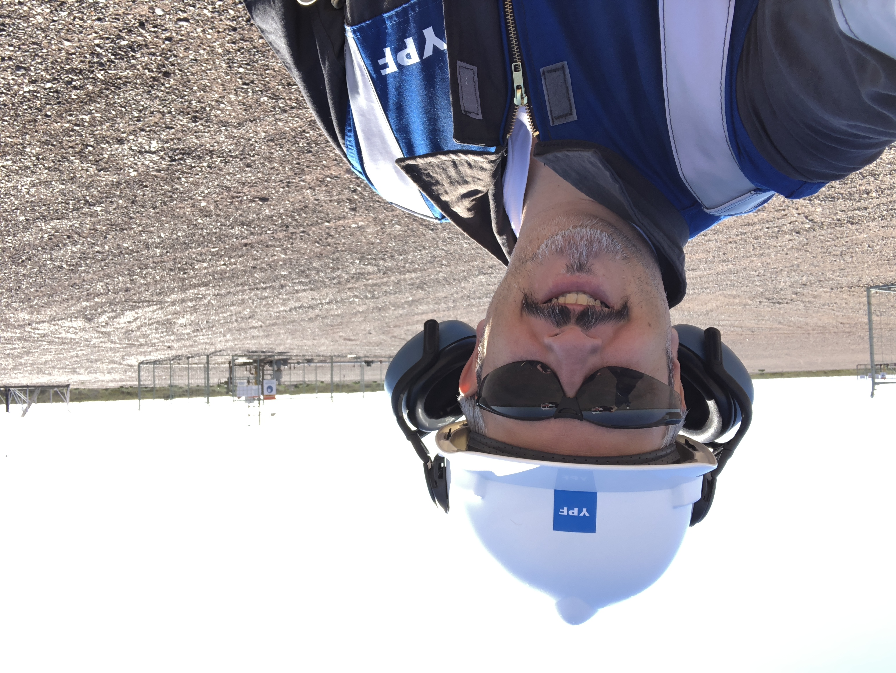

Perfil Profesional
Lic. En Sistemas (MBA) con amplia experiencia en implementación de soluciones de software y aplicaciones a medida como parte del proceso de transformación digital de compañías y corporaciones. He desarrollado mi carrera profesional en empresas multinacionales que me ha permitido crecer profesionalmente como líder de equipos multidisciplinario responsables de proyectos y servicios. Fuerte orientación a la transformación de procesos corporativos, digitalización y gestión del cambio.En industrias como Alimentos, Servicios, Consumo Masivo, Oil and Gas y Agro, entre otras. Dominio de inglés oral y escrito.
Educación Formal
MBA, Universidad Tecnológica Nacional (2005). Licenciatura en Sistemas en Universidad CAECE en Buenos Aires (1996). Técnico en Electrónica orientación telecomunicaciones, Instituto ORT Argentina (1989)
Cursos y Certificaciones
Aspectos Técnicos de los NFT
Azure DevOps Boards for Project Managers
DevOps esencial
Arquitectura de Software:del desarrollador al arquitecto
Arquitectura de Software:diseño de software esencial
Blcokchain y Bitcoin Fundamentos esenciales
Scrum Fundation Professional Certificate
Perfil de Linkedin
Experiencia Laboral
PPM | MDE Network Service Delivery Manager
Gestión de la operación (delivery de servicios de transformación) de la compañía con fuerte orientación a resultados. Gestión de proyectos y programas de transformación digital de operaciones industriales. Diseño de arquitectura de transformación y procesos de digitalización de tareas manuales o no automatizadas. Gestión mediante metodologías AGILE para la implementación de proyectos de digitalización. Facilitación de actividades del equipo de desarrollo, historias de usuario, estimación de sprints backlog y product backlog. Uso de DevOps, Trello, Jira, Zoho como herramientas de soporte para la gestión. Clientes: YPF (oil and gas), Axion Energy, Pampa Energía, Hellmmans, Genneia , Termoeléctrica Manuel Belgrano, Oldelval, Profertil, YPF Luz, Termoeléctrica Gral. Belgrano, Minera Teck (Chile), Ecopetrol (Colombia), BHP (Chile).
IBM Argentina - GBS (Global Business Services) Project Manager
Gestión de proyectos, administración de recursos y presupuesto, desarrollo de estrategias tecnológicas y re-ingeniería de procesos. Proyecto Aluar (Primario, Div. Elaborados) – FATE – INFA – Hidroeléctrica Futaleufu- Implementación SAP para el grupo como líder del frente CutOver responsable de la coordinación confección y puesta en marcha del plan de corte/transición. Alcance funcional para sus cinco (5) negocios. Abastecimiento, Finanzas, Mant. de planta, Gestión de Proyectos, Servicios (CS,ETM), Comercial y Logística, RRHH. Duración, Oct 2014 – Abr 2015. Logro principal: definir y coordinar la puesta en marcha sobre plataforma SAP del negocio de 4 compañías simuláneamente sin inconvenientes que impacten en el día a día de la operación. Proyecto Abbvie (Laboratorio Abbott) - Lider del frente conversión de datos para el rollout global en LATAM (11 países en dos olas de implementación). Coordinación de las actividades de preparación (extracciòn y conversión) de datos maestros. Personas a cargo 8. Alcance funcional para ambas olas de implementación: RTR, OTC, SCE y PTP. Implementación de SAP para Pepsico Foods en países: Irlanda,USA,Argentina, Uruguay, Chile, Perú, Colombia, Ecuador, Venezuela y Paraguay. Lider de frente comercial para la implementación de SAP para Pepsico Worldwide Flavors, para cuatro países (Brasil, Uruguay, Venezuela y México). El logro fundamental fue la implementación de la solución de manera simultánea y bajo un cronograma muy exigente, por requerimiento del negocio. Trabajo en conjunto con centro de excelencia de Pepsico en USA.
Capgemini Argentina – Manager
Responsable de la administración de cuentas, proyectos y servicios desde el desarrollo comercial hasta la aceptación del producto por parte del cliente. Proyectos: Gerente de integración para el proyecto COPA (Consolidación de Procesos y Aplicaciones), implementación (blueprint) SAP para YPF. Negocios de mid-stream y down-stream. Personas a cargo, 25. Gerente site LATAM para Coke Scale, Coca Cola. Roll out global para 53 países con 30 consultores funionales a cargo. Responsable de la gestión del servicio de outsourcing para el proyecto. PMO para el proyecto de transición de procesos de gestión de proveedores y compras. BPO Avon LATAM, para 16 países de LATAM. Personas a cargo: 4. Gestión económica y financiera del proyecto.
Softtek Argentina – Gerente DE CONSULTORÍA
Gestión de plan de carrera para 25 consultores. Gerenciamiento de proyectos y cuentas. Gestión de presupuestos para proyectos a cargo de mi gerencia con un budget de mas de 100.000 h/h. Clientes: Editorial Estrada, Monsanto, Arre Beef, Aventis, Roche, Roemmers, Bunge, Nidera, Citrusvil, Corn Products.
En campo
Oil & Gas

Oil & Gas
Agroindustria
Farmacéutica
Automotriz